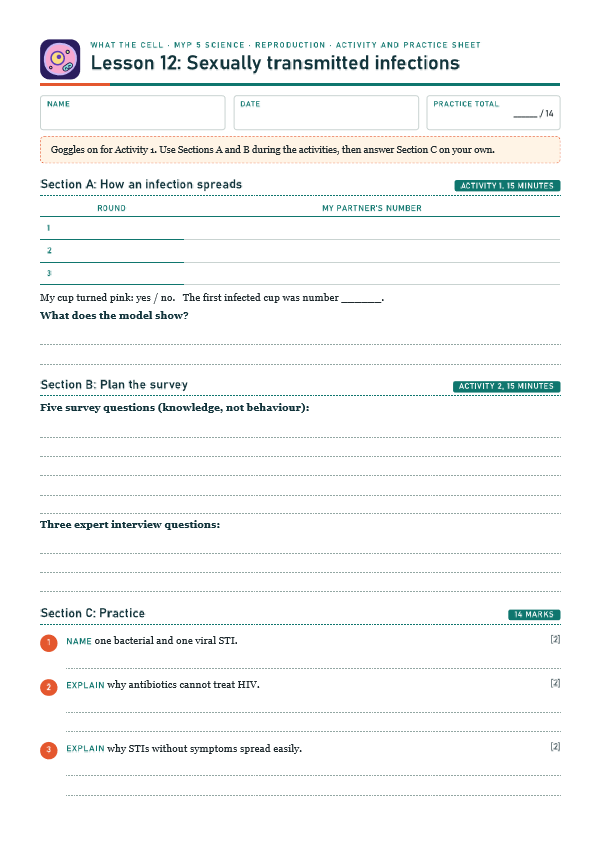

By the end of the lesson you can
- Describe two bacterial and two viral STIs
- Explain why many STIs persist in communities
- Describe how STIs can be prevented and treated
- Plan a survey and an interview for the Criterion D task
Keys: arrows or a presentation clicker move the slides, F for full screen. Slides with a red dot have a video or simulation.
Videos (all 5 minutes or less)
- 3:04
Sexually transmitted infections
igbiocomplete. While you watch: How is HIV passed from person to person? Slide 8.
- 1:53
STI information
Open Clinic NHS. While you watch: Why do people with an STI often not know? Slide 10.
Print and practise

Activity and practice sheet
Used in the lesson’s activities, with practice questions. Your teacher has the answers.
Download (PDF)Lesson 12 slides
All 21 slides in one file, to read again or print. The video buttons on the slides open YouTube.
Download the slides (PDF)Revising? The Revision tab on the unit page has the unit notes and review.
Notes: Sexually transmitted infections
STI
Sexually transmitted infection: an infection passed from person to person by sexual contact.
pathogen
A microorganism that causes disease, such as a bacterium or a virus. For example: chlamydia bacteria, HIV.
antibiotic
A medicine that kills bacteria. Antibiotics do not work on viruses.. For example: penicillin.
HIV
Human immunodeficiency virus: destroys white blood cells that fight infection.
AIDS
The late stage of untreated HIV, when the immune system fails and other infections become deadly.
asymptomatic
Infected but showing no signs of illness. For example: many people with chlamydia.
vaccine
Trains the immune system to recognise a pathogen before infection. For example: HPV vaccine.
contact tracing
Finding, informing and testing the people an infected person may have passed the infection to.
epidemiology
The study of how diseases spread through a population.
Key words
| STI | sexually transmitted infection: passed on by sexual contact |
|---|---|
| pathogen | a microorganism that causes disease |
| antibiotic | a medicine that kills bacteria, not viruses |
| asymptomatic | having an infection but no symptoms |
| HIV / AIDS | virus that attacks immune cells / the illness it causes if untreated |
| vaccine | trains the immune system before infection |
| contact tracing | finding and testing people who may have been infected |